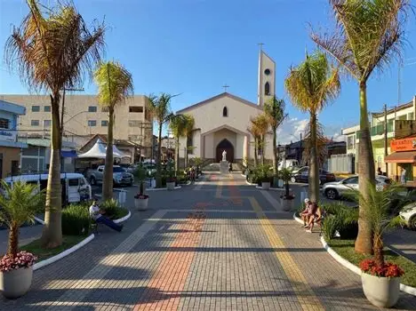

AMOR POR TOLEDO,
RESPEITO PELO POVO
“Quem ama Toledo trabalha de verdade. Tudo o que conquistamos até aqui foi fruto de ouvir a nossa gente e colocar a mão na massa.”
Política de verdade não se faz com promessas vazias nem palanques distantes. Faz-se com presença diária nos bairros, respeito pelo trabalhador e obras que transformam vidas. Estar ao lado do povo de Toledo é a nossa maior missão.
Trabalho contínuo, transparência e proximidade com cada família toledense.
De Filho da Terra a Prefeito:
Uma História Forjada no Trabalho
Origem em Toledo-MG
Criado na simplicidade do interior mineiro, Zildo aprendeu desde cedo com sua família que a palavra empenhada tem valor absoluto e que a dignidade vem do suor honesto e do respeito a cada ser humano.
Presença e Compromisso Social
Sua ligação direta com a comunidade e o olhar atento para quem mais precisava consolidaram uma liderança respeitada. Zildinho sempre esteve perto das pessoas, apoiando iniciativas comunitárias e esportivas.
Gestão que Faz Acontecer
À frente da Prefeitura Municipal, colocou a casa em ordem, destravou moradias populares e levou asfalto e iluminação LED aos bairros esquecidos. Uma gestão marcada pelo carinho e pela eficiência executiva.
Realizações da Gestão:
Trabalho que Mudou a Vida do Nosso Povo
Habitação para Quem Precisa
O maior programa de moradias populares e regularização fundiária da história de Toledo. Casas entregues com dignidade, água encanada e infraestrutura completa.
Infraestrutura e Obras
Pavimentação asfáltica de qualidade nos bairros, reformas de pontes na zona rural e conversão de 100% da iluminação pública para lâmpadas LED econômicas.
Cuidado com as Pessoas
Atendimento humanizado na saúde, remédio garantido no posto, transporte de pacientes com respeito e apoio incondicional aos pequenos comerciantes e produtores rurais.
Nossos Projetos
Obras e Programas Ativos em Toledo
Acompanhe em tempo real o progresso das principais ações da gestão municipal. Cada projeto carrega o compromisso de transformar Toledo em uma cidade melhor para todos.
Minha Casa Toledo
Habitação SocialPrograma de construção e entrega de unidades habitacionais populares com infraestrutura completa. Regularização fundiária e escrituras para famílias de baixa renda.
Asfalto nos Bairros
InfraestruturaPavimentação asfáltica de qualidade nos bairros mais necessitados, recuperação de pontes rurais e drenagem pluvial para acabar com os alagamentos.
Iluminação LED
Cidade SeguraConversão de 100% da iluminação pública municipal para tecnologia LED econômica, garantindo segurança noturna e redução de custos com energia.
Saúde Perto de Você
Ação SocialAmpliação do atendimento médico nos postos de saúde, garantia de medicamentos básicos e transporte gratuito de pacientes para tratamentos especializados.
Água e Saneamento
Zona RuralExtensão da rede de água tratada e saneamento básico para comunidades rurais. Perfuração de poços artesianos e manutenção de estradas vicinais.
Educação e Esporte
FuturoReforma e ampliação de escolas municipais, quadras poliesportivas e programas de esporte para jovens. Investimento direto no futuro de Toledo.
Cuidado com o Povo:
Zildinho ao Lado de Quem Faz Toledo
Política se faz com presença. Nos bairros, nos canteiros de obras, nos eventos e nas visitas — Zildinho está sempre ouvindo e cuidando do povo de Toledo.
